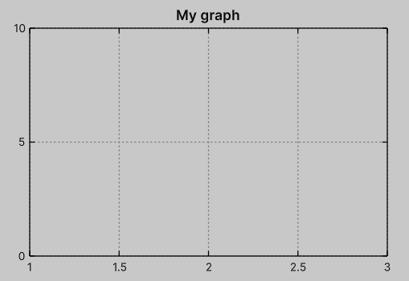
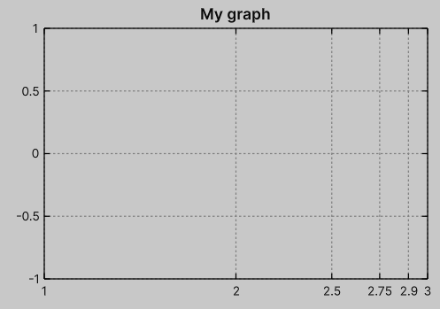
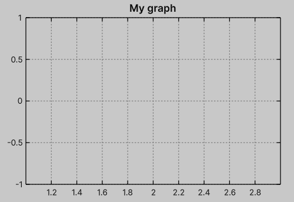
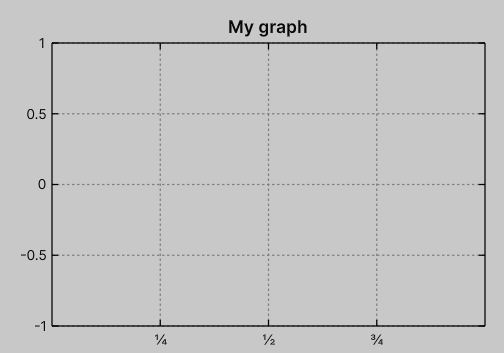
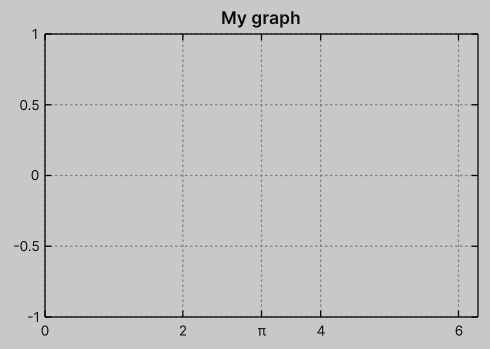
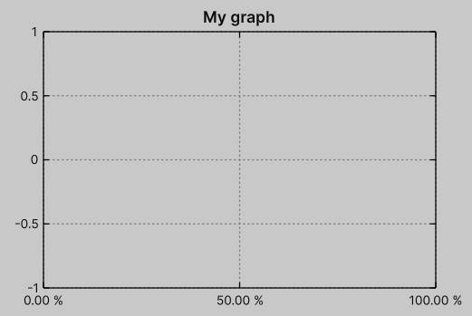
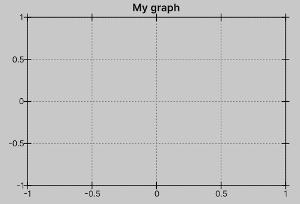
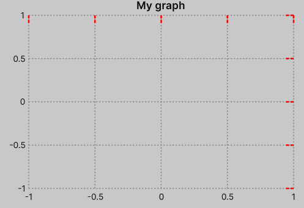

Tics
You can customize tic values and formatting for each axis.
This is done using the ITicsProvider interface.
There are several built-in implementations that cover most common use cases.
Below you will find a brief description of each of them.
Additionally, you can learn how to implement a custom provider in the Advanced/Custom Tics Provider section.
All default implementations can be accessed via the Tics static class.
Tic
Tic is a helper struct used for tics generation related to a given axis.
Internally, it is essentially a tuple of float and string.
var tic = new Tic(value: 1.2f, label: "1.200");
Auto
Tics.AutoProvider is the default provider used for tics generation.
It creates tics based on the current minimum and maximum axis values.
It has one configurable parameter: prefferedCount.
This parameter allows the user to control the density of tics on the axis.
However, the resulting number of tics is not guaranteed, since the internal implementation assumes evenly spaced tics aligned with zero-based offsets on the axis.
Use Tics.Auto(...) to create a new AutoProvider instance:
var graph = new Graph
{
XAxis = { Tics = Tics.Auto(), Min = 1, Max = 3 },
YAxis = { Tics = Tics.Auto(preferedCount: 3), Min = 0, Max = 10 },
};

Collection
Using the Tics.CollectionProvider, you can define specific tics at given values by providing a collection1
var graph = new Graph
{
XAxis = {
Min = 1, Max = 3,
Tics = Tics.Collection(new[] { 1, 2, 2.5f, 2.75f, 2.9f, 3f }),
},
};

Step
If you need uniformly distributed tics with a given step from start to end, use Tics.StepProvider:
var graph = new Graph
{
XAxis = {
Min = 1, Max = 3,
Tics = Tics.Step(start: 1.2f, step: 0.2f, end: 2.8f),
},
};

Manual
You can provide arbitrary tic labels for given values using Tics.ManualProvider:
var graph = new Graph
{
XAxis = {
Min = 0, Max = 1,
Tics = Tics.Manual(new Tic[]{
new(value: 1f / 4, label: "¼"),
new(value: 2f / 4, label: "½"),
new(value: 3f / 4, label: "¾"),
}),
},
};

Combine
Using the Tics.CombineProvider, you can combine multiple ITicsProviders into a single provider.
This can be especially useful when you want to mark specific constants on plots (e.g. π).
There are two ways to achieve this in the API:
- Using an extension method, you can call
provider.Combine(other)
var graph = new Graph
{
XAxis = {
Min = 0, Max = math.PI2,
Tics = Tics.Auto().Combine(Tics.Manual(new[]{ new Tic(math.PI, "π") }))
},
};
- Using a collection-based helper, you can combine multiple providers via
Tics.Combine(...)
var graph = new Graph
{
XAxis = {
Min = 0, Max = math.PI2,
Tics = Tics.Combine(
Tics.Auto(),
Tics.Manual(new[]{ new Tic(math.PI, "π") })
),
}
}

String formatting
You can also easily format tic strings by providing an optional formatter parameter, which is of type Func<float, string>.
This option is available for the Auto, Collection, and Step providers.
Below is an example using percentage formatting2:
var graph = new Graph
{
XAxis = {
Min = 0, Max = 1,
Tics = Tics.Auto(
preferedCount: 3,
formatter: v => v.ToString("P2")
),
},
};

Tics Direction
You can also define the direction of tics to render them inside the canvas (in), outside the canvas (out), or on both sides (both).
This can be set via USS using the values in, out, or both, or via the TicsDirection enum.
You can also disable tics entirely by providing none (or TicsDirection.None).

Styling
You can personalize tics via color, length, width, bits3, and dash pattern.

.graph-canvas {
--graph-tics-color: red;
--graph-tics-length: 10;
--graph-tics-width: 2;
--graph-tics-bits: 12;
--graph-tics-dash-pattern: "4 2";
}
-
You can provide any object that can be cast to
ReadOnlySpan.↩ -
Learn more about .NET string formatting in the C# reference.↩
-
Same notation as introduced in border styling, see Tutorial/Border.↩